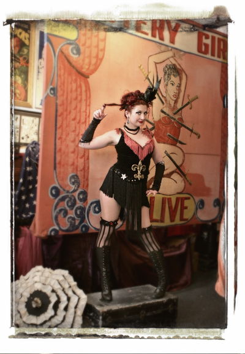

In Europe, Suzanne Ramsey, along with her fellow artists of Cabaret New Burlesque, is represented by Visiteurs du Soir (Photo by Eve St Ramon). For more information and touring dates visit their site.
Kitten brings Songs! Sequins! Sass! to her audience worldwide. Check the Events page for the latest photos and touring dates.